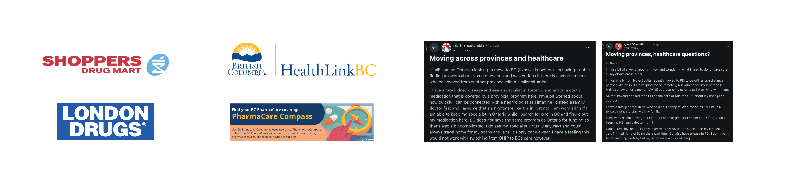
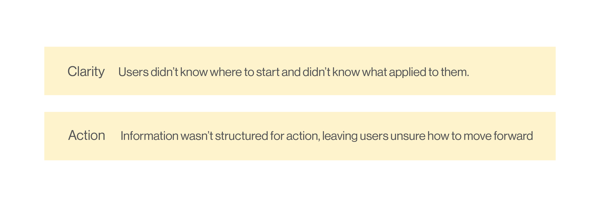
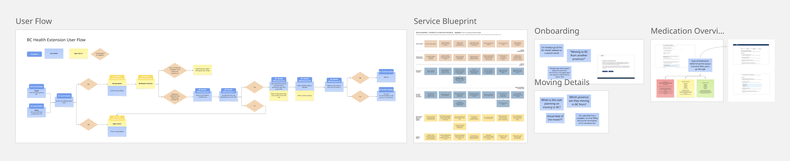
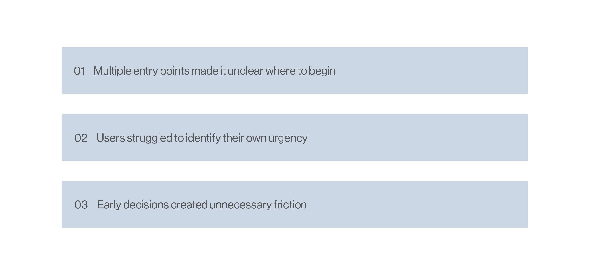
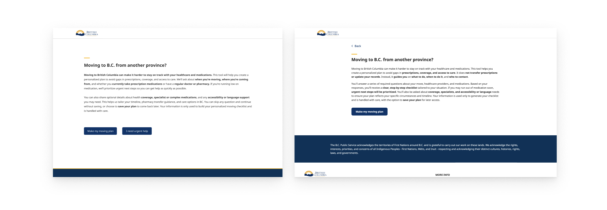

university project | Sep 2025 - April 2026
Moving between provinces is already overwhelming—figuring out healthcare on top of that makes it even harder. This project explores how a guided tool within the BC Health website can help people stay on track with their medications by turning a confusing process into clear, actionable steps.
When people move to British Columbia, they’re often left to figure out their healthcare on their own. Information is scattered, steps aren’t clear, and there’s no guidance on what to do first. For people on ongoing medications, this creates real stress, especially when timing matters.
It’s not just a lack of information. It’s a lack of direction.
Most existing resources are static, they tell you what exists, but not what to do.

People currently rely on a mix of different sources to figure out what to do. This usually includes provincial websites like HealthLink BC and PharmaCare, pharmacy chains such as Shoppers Drug Mart, and even forums like Reddit where others share their experiences. While each of these can be helpful, none of them guide users through the process. People are left piecing together information on their own, trying to figure out what applies to them and what to do next.
Who better to talk to than people who have gone through the process?

I conducted user interviews with individuals who had recently moved to BC from another province, focusing on how they navigated healthcare and maintained their prescriptions. These conversations, along with secondary research, revealed two key patterns that shaped the direction of the project.
At first, I explored more automated solutions, something that could handle prescription transfers entirely.
But that quickly broke down. The system is too complex, and there are too many points that require human verification.
I also looked into a standalone app, but that raised trust concerns around using a third-party platform for healthcare.

So I shifted my approach. Instead of trying to do everything for the user, I focused on helping them understand what to do next, within a platform they already trust.
At this point, I had a structured flow that was meant to guide users through maintaining their healthcare when moving... but questions started to come up. Was the starting point clear? Did the flow actually reduce confusion, or just reorganize it? Were users able to move forward with confidence, or were they still second-guessing their decisions?

To find out, I conducted usability testing with four participants. Participants were asked to go through key tasks such as starting the process, entering their medication, and identifying what steps they would take next based on their situation. I also asked follow-up questions to understand how confident they felt navigating the flow and whether the guidance felt clear and actionable. At this stage, the experience included multiple entry points based on urgency. During testing, I paid close attention to how users approached the starting point. Several participants hesitated before selecting an option, unsure which path applied to them. Others moved forward, but later questioned whether they had made the right choice.
A new approach centred around three major insights.

>Participants shared three pivotal insights that dictated the direction of the next iteration.
Removed multiple entry points
The original design introduced different starting paths, but testing showed this caused hesitation and confusion. Removing this allowed users to begin immediately without needing to decide how to start.

Handled urgency within the flow
Instead of separating users based on urgency, the experience now detects urgency through how users respomd and prioritizes steps. This keeps the flow responsive without requiring users to self-identify.
Structured the experience as a clear progression
Each step builds on the previous one, leading toward a personalized checklist. This helps reduce confusion and keeps users focused on what to do next.
Clarity over automation
I initially focused on creating a more automated solution, but quickly realized that the system and red tape was too complex for that to be realistic. What mattered more was helping users understand what to do. This shift helped me prioritize clear guidance over trying to do everything for the user.
Small decisions have big impact
One of the biggest learnings came from the starting point of the experience. Having multiple entry options seemed helpful at first, but it created hesitation. Removing that single decision made the entire flow feel easier to follow, showing me how even small design choices can shape user confidence.
Designing for uncertainty
This project made me more aware of how people behave when they feel unsure. Users weren’t just looking for information, they needed reassurance that they were doing the right thing. This pushed me to design in a way that reduces doubt and helps users move forward with confidence.